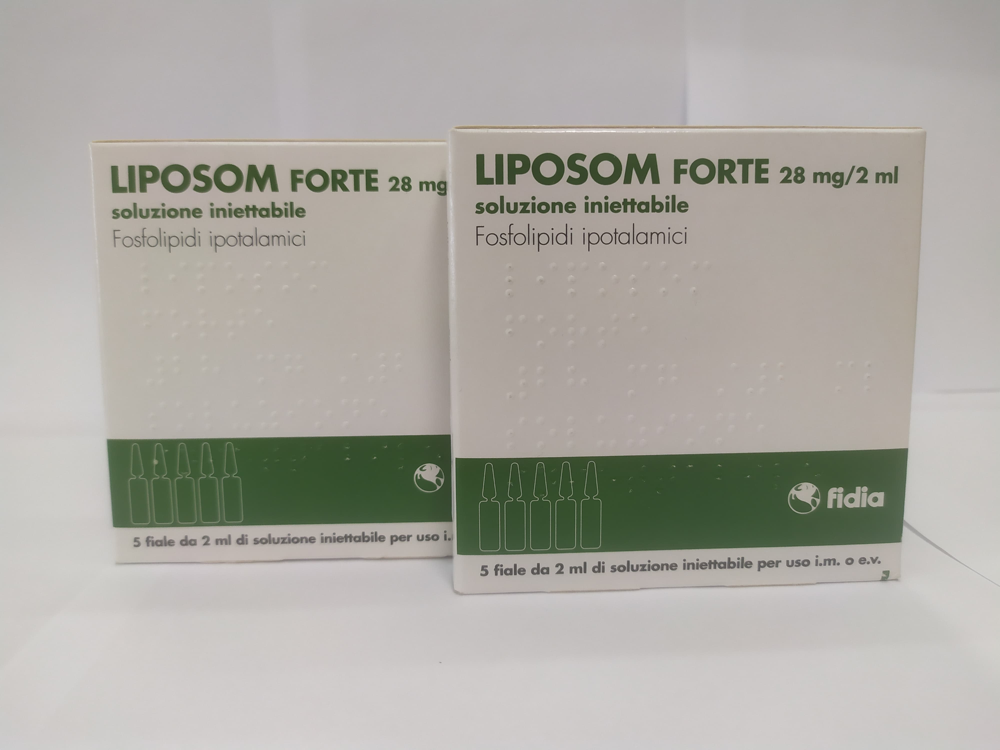

Контактна інформація:
Ціна: 750 грн/уп.
В наявності
Виробник: Італія
Ціна: 750 грн/уп.
В наявності
Саме в FarmItal ви можете купити ампули Liposom Forte,Ліпосом Форте в Україні, Гарантовано Якісний!
Доставка Liposom Forte здійснюється транспортними компаніями, терміни виконання замовлення обумовлюються менеджером Фармітал. Ви можете замовити Ліпосом Форте у містах: Одеса, Херсон, Чернігів, Сєверодонецьк, Бердянськ, Бровари, Дніпро, Вінниця, Київ, Слов'янськ, Полтава, Краматорськ, Біла Церква, Кам'янське, Маріуполь, Чернівці, Олександрія, Кам'янець-Подільський, Львів, Запоріжжя, Кропивницький, Житомир, Івано-Франківськ, Суми, Черкаси, Костянтинівка, Мелітополь, Кривий Ріг, Рівне, Луцьк, Нікополь, Павлоград, Ужгород, Кременчук, Лисичанськ, Хмельницький, Тернопіль, Харків, Миколаїв, а також в інших населених пунктах України.
Розчин для ін'єкцій для внутрішньом'язового або внутрішньовенного застосування.
По 2 мл в ампулах із оранжевого скла
2 мл розчину Ліпосом Форте містять активну речовину - фосфоліпіди гіпоталамуса 28 мг.
Допоміжні речовини: манітол, натрію гідрофосфату додекагідрат, натрію дигідрофосфату дигідрат, ефіри п-гідроксибензойної кис-лоти, вода для ін'єкцій.
Парентеральне введення фосфоліпідів гіпоталамуса може активувати гіпоталамічний метаболізм шляхом збільшення обороту дофаміну, тирозин гідроксилази та аденілатциклази з подальшим накопиченням циклічного AMФ. Ця фармакологічна дія відбивається особливо на функції системи гіпоталамус-гіпофіз. Вплинув на фізико-хімічні властивості мембран нейронів, гіпоталамічні фосфоліпіди змінюють адаптацію рецепторів центральних нейронів до лікування.
Ліпосом Форте застосовується як допоміжний засіб при лікуванні метаболічних церебральних порушень внаслідок нейроендокринних розладів.
Ліпосом Форте вводиться по 2 мл внутрішньом'язово або внутрішньовенно 1 раз на день. Курс лікування визначається лікарем індивідуально.
Протипоказаннями до застосування Ліпосом Форте є: встановлена гіперчутливість до компонентів препарату; наявність інфекції чи пошкодження шкірного покриву області; ін'єкції.
Зберігати у недоступному для дітей місці.Зберігати при температурі не вище 25 °C.